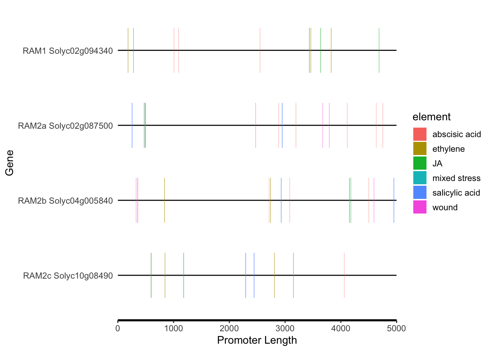

3 RAM1 (“Solyc02g094340.1”), RAM2 (“Solyc02g087500.3”, “Solyc04g005840.1”, “Solyc10g084900.1”)
library(BioVizSeq)
# SL RAM1 prom data (PlantCARE_16059), PlantCARE_16059_SL_RAM1prom_plantCARE
plantcare_file.Solyc02g094340 <- read.table("/Volumes/data_work/Data6/Sinha_lab/PlasticityIII_AMF_TRAP/AMF_responsive_gene_promoters/PlantCARE_16059_SL_RAM1_prom_plantCARE/plantCARE_output_PlantCARE_16059.tab", header = FALSE, sep = '\t', quote="")
# SL RAM2a (tentatively called) "Solyc02g087500.3" prom data ()
plantcare_file.Solyc02g087500 <- read.table("/Volumes/data_work/Data6/Sinha_lab/PlasticityIII_AMF_TRAP/AMF_responsive_gene_promoters/PlantCARE_18029_RAM2a_prom_plantCARE/plantCARE_output_PlantCARE_18029.tab", header = FALSE, sep = '\t', quote="")
# SL RAM2b prom data Solyc04g005840, PlantCARE_28616
plantcare_file.Solyc04g005840 <- read.table("/Volumes/data_work/Data6/Sinha_lab/PlasticityIII_AMF_TRAP/AMF_responsive_gene_promoters/PlantCARE_28616_SLRAM2B_prom_plantCARE/plantCARE_output_PlantCARE_28616.tab", header = FALSE, sep = '\t', quote="")
# SL RAM2c prom data Solyc10g084900 PlantCARE_31086
plantcare_file.Solyc10g08490 <- read.table("/Volumes/data_work/Data6/Sinha_lab/PlasticityIII_AMF_TRAP/AMF_responsive_gene_promoters/PlantCARE_31086_SLRAM2C_prom_plantCARE/plantCARE_output_PlantCARE_31086.tab", header = FALSE, sep = '\t', quote="")
# change format
plantcare_file.Solyc02g094340 <- plantcare_classify(plantcare_file.Solyc02g094340) %>% mutate(ID="RAM1 Solyc02g094340")
plantcare_file.Solyc02g087500 <- plantcare_classify(plantcare_file.Solyc02g087500) %>% mutate(ID="RAM2a Solyc02g087500")
plantcare_file.Solyc04g005840 <- plantcare_classify(plantcare_file.Solyc04g005840) %>% mutate(ID="RAM2b Solyc04g005840")
plantcare_file.Solyc10g08490 <- plantcare_classify(plantcare_file.Solyc10g08490) %>% mutate(ID="RAM2c Solyc10g08490")
# combine
plantcare_loc <- plantcare_to_loc(bind_rows(plantcare_file.Solyc02g094340,plantcare_file.Solyc02g087500, plantcare_file.Solyc04g005840, plantcare_file.Solyc10g08490))
promoter_length <- data.frame(ID = unique(plantcare_loc$ID), length=5000)
# all elements
motif_plot(plantcare_loc, promoter_length,show_motif_id=FALSE) + labs(x="Promoter Length", y="Gene")
# "abscisic acid", SA, JA, mixed stress, wound, ethylene
motif_plot(plantcare_loc %>% filter(element %in% c("salicylic acid","JA","abscisic acid","mixed stress","wound","ethylene")), promoter_length,show_motif_id=FALSE,) + labs(x="Promoter Length", y="Gene")
# facet_grid does not work
#motif_plot(plantcare_loc, promoter_length,show_motif_id=FALSE) + labs(x="Promoter Length", y="Gene") + facet_wrap(element~.)
# SA and JA
motif_plot(plantcare_loc %>% filter(element %in% c("salicylic acid","JA")), promoter_length,show_motif_id=FALSE,) + labs(x="Promoter Length", y="Gene")